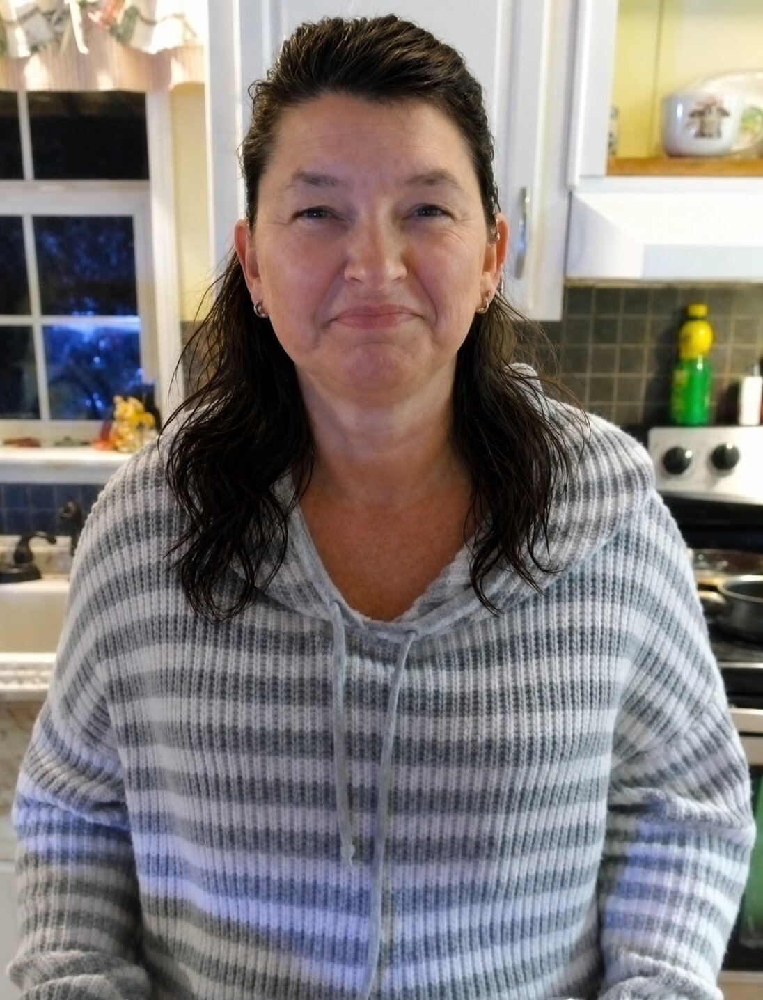
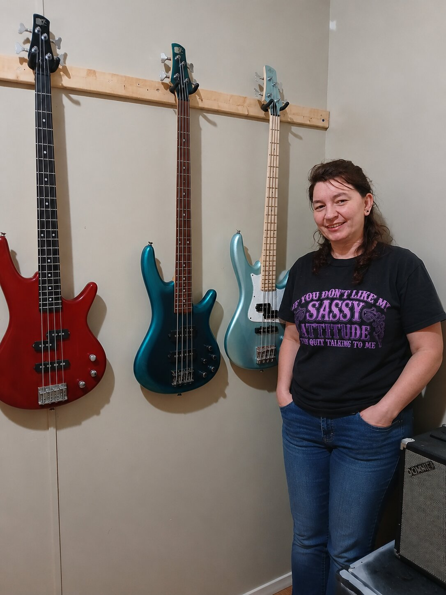

All About Sherri
Sherri Hess was born on October 30, 1973. Her life has been defined by determination, resilience, creativity, and a commitment to lifelong learning. Throughout the years, she has embraced both challenges and successes, viewing every stage of life as an opportunity to grow. Her story reflects the belief that each experience, whether difficult or rewarding, contributes to the person someone ultimately becomes.
One of Sherri's earliest milestones came in 1994 when she earned her GED. Although her educational journey followed a nontraditional path, completing her diploma demonstrated her determination to create new opportunities and build a better future. That same year, she purchased her first car, marking an important step toward independence and personal responsibility.
Creativity has always been a central part of Sherri's life. At the age of sixteen, she discovered a passion for cross-stitching, a hobby she continues to enjoy today. Over the years, she has expanded her artistic interests to include painting and diamond art, both of which provide opportunities to express her creativity while developing patience and attention to detail. She is also an avid reader who enjoys exploring new ideas, perspectives, and stories through books.
Family has always been the foundation of Sherri's life. She became the proud mother of two daughters, born in 1995 and 1999, and considers raising them one of her greatest accomplishments. Motherhood taught her the values of patience, responsibility, strength, and unconditional love. Today, she is also the devoted grandmother of five grandchildren—one granddaughter and four grandsons. Spending time with her grandchildren and watching them grow has become one of the greatest joys of her life.
Throughout her personal journey, Sherri has experienced different chapters that have strengthened her understanding of relationships, commitment, and personal growth. She married Mitchell Hess on January 20, 2001, beginning a partnership built on friendship, mutual support, and shared experiences. Together they have created a life centered on family, encouragement, and making lasting memories.
Education remained an important personal goal throughout Sherri's adult life. In 2019, she earned a bachelor's degree in accounting, an achievement that required years of dedication, perseverance, and hard work. Completing her degree reinforced her belief that it is never too late to pursue meaningful goals and that persistence often leads to success.
Never one to stop learning, Sherri took on a new challenge in 2022 by learning to play the bass guitar. Developing this new musical skill required patience, discipline, and confidence, while also providing another creative outlet. Her willingness to embrace unfamiliar experiences reflects her belief that personal growth continues throughout every stage of life.
Outside of her educational and creative pursuits, Sherri enjoys an active lifestyle filled with hobbies that reflect both her adventurous spirit and playful personality. She enjoys collecting carousel music boxes, hiking, swimming, rafting, motorcycle riding, and spending time outdoors. She is also a fan of racing video games, appreciating both the excitement of competition and the opportunity to challenge herself.
Those who know Sherri describe her as determined, caring, creative, and optimistic. She approaches life with resilience, always looking for opportunities to learn something new or embrace the next adventure. Whether spending time with family, exploring a new hobby, or pursuing another personal goal, she remains committed to making the most of every opportunity. Her life story serves as a reminder that perseverance, curiosity, and a love for family can inspire a lifetime of growth and meaningful accomplishments.
Favorite Facts About Sherri
- Favorite Hobby:Bass Playing
- Favorite Food:Charcoal Grilled Steak
- Favorite Quote:"She believes she could, so she did."
- Future Goal:"My goal is to continue growing personally and professionally, build a successful business that gives me financial freedom and flexibility, spend more quality time with my family and grandchildren, and keep learning and enjoying new adventures throughout life."